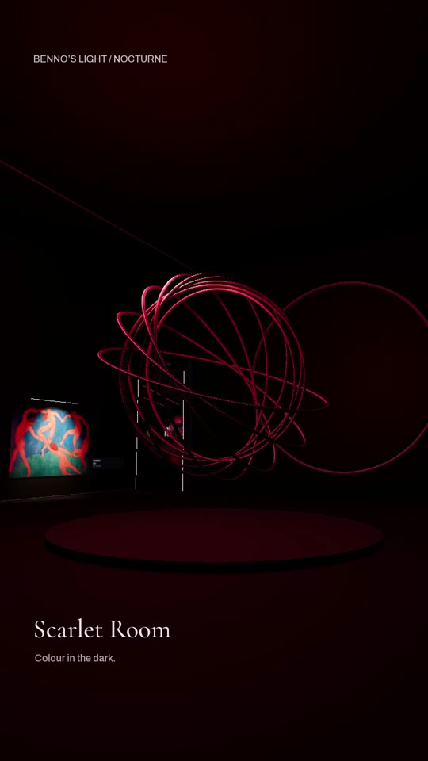
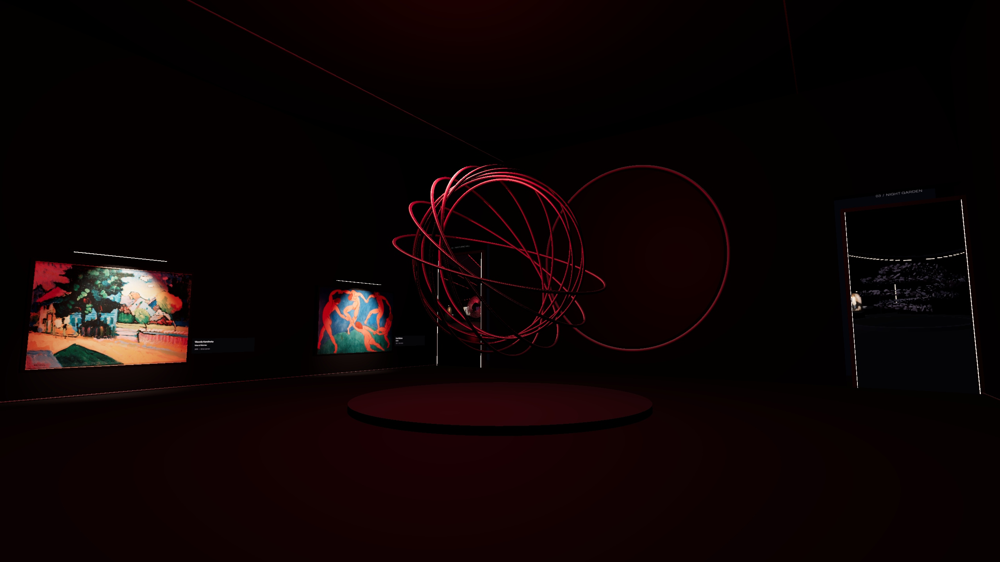
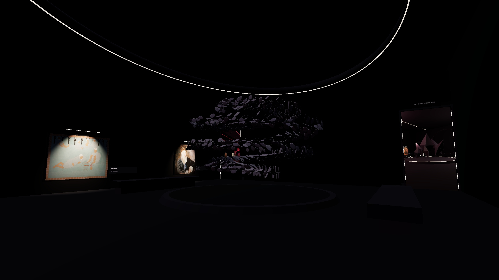
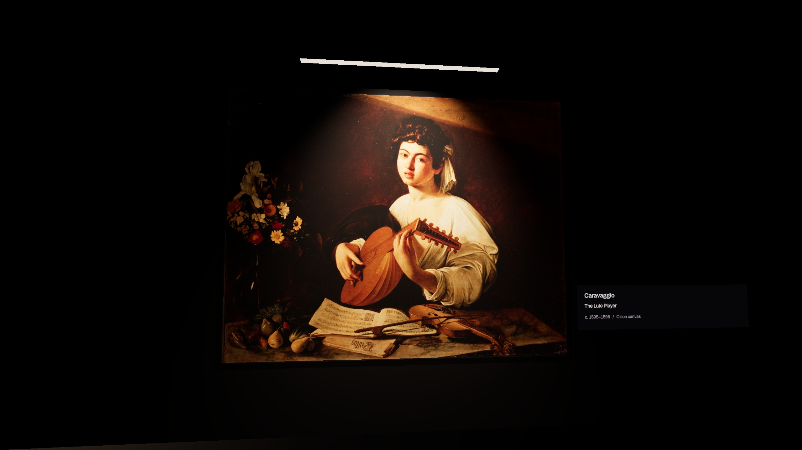
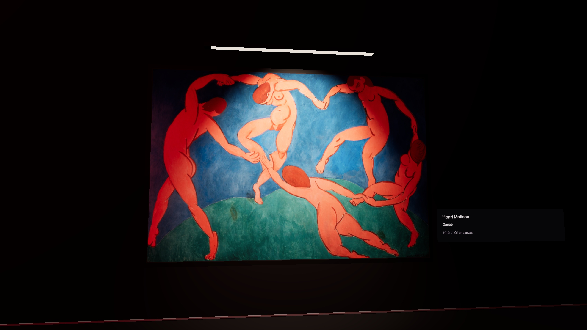
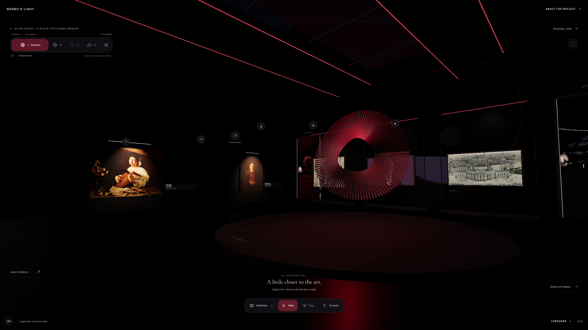

Gallery film
Landscape · 1920 × 1080

Nocturne media showcase
Films, photography, and social covers from the Nocturne gallery.
Kinetic light installation Nocturne Hall
Both with the gallery’s original soundscape.
Landscape · 1920 × 1080

Portrait · 1080 × 1920
8 high-resolution images · 2560 × 1440





